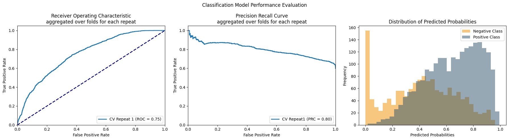
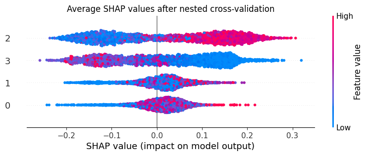

Importing Dependencies¶
[1]:
import pyCellPhenoX
import pandas as pd
/Users/zhanglab/Documents/Python Projects/pyCellPhenoX/pycpx/lib/python3.12/site-packages/tqdm/auto.py:21: TqdmWarning: IProgress not found. Please update jupyter and ipywidgets. See https://ipywidgets.readthedocs.io/en/stable/user_install.html
from .autonotebook import tqdm as notebook_tqdm
Step 1: Import Data¶
[3]:
# paths to expression data and meta data files
expression_file = "./../input/uc_fibroblast_exp.csv"
meta_file = "./../input/uc_fibroblast_meta.csv"
output_path = "./../output/"
# read in data
expression_mat = pd.read_csv(expression_file, index_col=0)
meta = pd.read_csv(meta_file, index_col=0)
[4]:
expression_mat.head()
[4]:
| ADAMDEC1 | ACTA2 | TAGLN | CCL11 | CCL13 | APOE | CXCL14 | CFD | CCL8 | CCL2 | ... | CCDC23 | MEIS1 | AP001258.4 | FBXO42 | ASUN | ELP6 | CCDC77 | ELK3 | INO80E | FHOD3 | |
|---|---|---|---|---|---|---|---|---|---|---|---|---|---|---|---|---|---|---|---|---|---|
| cell | |||||||||||||||||||||
| N7.LPA.ATGTTCACATCGAC | 4.591305 | 0.000000 | 0.000000 | 0.000000 | 0.0 | 4.402383 | 5.382054 | 2.619834 | 0.0 | 3.668685 | ... | 0.0 | 0.0 | 0.0 | 0.0 | 0.0 | 0.0 | 0.0 | 0.000000 | 1.657177 | 0.0 |
| N7.LPA.CATTAGCTGAGACG | 4.904113 | 0.000000 | 0.000000 | 4.694547 | 0.0 | 4.570602 | 5.383111 | 4.751197 | 0.0 | 3.820224 | ... | 0.0 | 0.0 | 0.0 | 0.0 | 0.0 | 0.0 | 0.0 | 1.997891 | 0.000000 | 0.0 |
| N7.LPA.AAGGCTTGTGTAGC | 4.600380 | 2.220309 | 0.000000 | 0.000000 | 0.0 | 3.243785 | 4.600380 | 4.420066 | 0.0 | 2.220309 | ... | 0.0 | 0.0 | 0.0 | 0.0 | 0.0 | 0.0 | 0.0 | 0.000000 | 0.000000 | 0.0 |
| N7.LPA.TATCAAGATGTGAC | 5.900079 | 0.000000 | 1.745390 | 3.204398 | 0.0 | 3.970470 | 3.970470 | 4.134618 | 0.0 | 6.055687 | ... | 0.0 | 0.0 | 0.0 | 0.0 | 0.0 | 0.0 | 0.0 | 0.000000 | 0.000000 | 0.0 |
| N7.LPA.GAGTGGGAATGTGC | 5.472313 | 1.715218 | 1.715218 | 5.259739 | 0.0 | 3.623356 | 4.856868 | 4.239430 | 0.0 | 3.169241 | ... | 0.0 | 0.0 | 0.0 | 0.0 | 0.0 | 0.0 | 0.0 | 0.000000 | 0.000000 | 0.0 |
5 rows × 5494 columns
[5]:
meta.head()
[5]:
| cell.1 | sample | disease | cell_type | cluster | nGene | nUMI | percent_mito | fibroblast_clusters | |
|---|---|---|---|---|---|---|---|---|---|
| cell | |||||||||
| N7.LPA.ATGTTCACATCGAC | N7.LPA.ATGTTCACATCGAC | N7 | Non-inflamed | LP | WNT2B+ Fos-lo 1 | 969.0 | 2357.0 | 0.031409 | WNT2B |
| N7.LPA.CATTAGCTGAGACG | N7.LPA.CATTAGCTGAGACG | N7 | Non-inflamed | LP | WNT2B+ Fos-hi | 681.0 | 1569.0 | 0.044614 | WNT2B |
| N7.LPA.AAGGCTTGTGTAGC | N7.LPA.AAGGCTTGTGTAGC | N7 | Non-inflamed | LP | WNT2B+ Fos-lo 2 | 615.0 | 1218.0 | 0.013957 | WNT2B |
| N7.LPA.TATCAAGATGTGAC | N7.LPA.TATCAAGATGTGAC | N7 | Non-inflamed | LP | WNT2B+ Fos-hi | 841.0 | 2115.0 | 0.021749 | WNT2B |
| N7.LPA.GAGTGGGAATGTGC | N7.LPA.GAGTGGGAATGTGC | N7 | Non-inflamed | LP | WNT2B+ Fos-lo 1 | 923.0 | 2194.0 | 0.019599 | WNT2B |
Step 2: Preprocess Data¶
generate latent dimensions configure input for CellPhenoX (include covariates and identify target column)
[6]:
## we actually need both the neighborhood abundance matrix (for CellPhenoX) & expression data (for the marker discovery later)
[7]:
# get the latent dimensions using NMF
latent_features, _ = nonnegativeMatrixFactorization(expression_mat, numberOfComponents=4, min_k=3, max_k=5) # the "_"" is the nmf model components which we don't need here
/Users/zhanglab_mac2/Library/CloudStorage/OneDrive-TheUniversityofColoradoDenver/Zhang_Lab/Research/shap/.conda/lib/python3.11/site-packages/sklearn/decomposition/_nmf.py:1710: ConvergenceWarning: Maximum number of iterations 200 reached. Increase it to improve convergence.
[8]:
# alternatively, use PCA
# proportion_var_explained = 0.9
# latent_features = principalComponentAnalysis(expression_mat, var=proportion_var_explained)
[9]:
# then, set up the input data for CellPhenoX
X,y = preprocessing(latent_features, meta, sub_samp=False, subset_percentage=0.25 , target="disease", covariates=[])
X.head()
[9]:
| 0 | 1 | 2 | 3 | |
|---|---|---|---|---|
| cell | ||||
| N7.LPA.ATGTTCACATCGAC | 0.285334 | 0.120589 | 0.458974 | 0.205040 |
| N7.LPA.CATTAGCTGAGACG | 0.239124 | 0.000000 | 0.587435 | 0.094555 |
| N7.LPA.AAGGCTTGTGTAGC | 0.255212 | 0.000000 | 0.462912 | 0.226226 |
| N7.LPA.TATCAAGATGTGAC | 0.340951 | 0.000000 | 0.347580 | 0.300781 |
| N7.LPA.GAGTGGGAATGTGC | 0.231140 | 0.175743 | 0.420713 | 0.348904 |
[10]:
print(X.shape)
print(y.shape)
(3698, 4)
(3698,)
Step 3: Run CellPhenoX¶
[11]:
# create CellPhenoX object
cellpx_obj = CellPhenoX(X, y, CV_repeats=1, outer_num_splits=3, inner_num_splits=2)
# and then train the classification model
cellpx_obj.model_training_shap_val(outpath = output_path)
entering CV loop
------------ CV Repeat number: 1
------ Fold Number: 1
--- Accuracy: 0.7023519870235199
1
--- Validation Accuracy: 0.8275862068965517 - Validation AUROC: 0.8185670261941448 - Val AUPRC: 0.9549581934555448
------ Fold Number: 2
--- Accuracy: 0.7055961070559611
2
--- Validation Accuracy: 0.9006085192697769 - Validation AUROC: 0.892869371682931 - Val AUPRC: 0.9770399352399095
------ Fold Number: 3
--- Accuracy: 0.6801948051948052
3
--- Validation Accuracy: 0.8765182186234818 - Validation AUROC: 0.8679925048973682 - Val AUPRC: 0.9707836787744281
Average AUROC: 0.8598096342581479 | Average AUPRC: 0.9675939358232942
best model precision-recall score = 0.9770
/Users/zhanglab_mac2/Library/CloudStorage/OneDrive-TheUniversityofColoradoDenver/Zhang_Lab/Research/shap/.conda/lib/python3.11/site-packages/shap/plots/_beeswarm.py:699: UserWarning: No data for colormapping provided via 'c'. Parameters 'vmin', 'vmax' will be ignored


[12]:
cellpx_obj.shap_df
[12]:
| 0_shap | 1_shap | 2_shap | 3_shap | interpretable_score | |
|---|---|---|---|---|---|
| cell | |||||
| N7.LPA.ATGTTCACATCGAC | 0.019978 | -0.007582 | 0.129763 | 0.017164 | 0.159322 |
| N7.LPA.CATTAGCTGAGACG | 0.018379 | 0.019989 | 0.234010 | 0.130304 | 0.402682 |
| N7.LPA.AAGGCTTGTGTAGC | 0.052278 | 0.037604 | 0.184861 | -0.004939 | 0.269803 |
| N7.LPA.TATCAAGATGTGAC | 0.013674 | 0.056203 | 0.068779 | -0.102463 | 0.036193 |
| N7.LPA.GAGTGGGAATGTGC | -0.017015 | 0.016166 | -0.011645 | -0.110724 | -0.123219 |
| ... | ... | ... | ... | ... | ... |
| N110.LPB.CCAGCGATCCTCCTAG | -0.025661 | -0.084043 | -0.027967 | 0.075934 | -0.061737 |
| N110.LPB.CGAATGTAGACTAGGC | 0.047468 | 0.004443 | 0.219336 | -0.048841 | 0.222407 |
| N110.LPB.TCAACGACAATCCAAC | 0.076038 | 0.083048 | 0.001184 | 0.036729 | 0.196999 |
| N110.LPB.CTGATAGAGCATGGCA | -0.014526 | 0.030951 | -0.008796 | 0.198806 | 0.206434 |
| N110.LPB.CTTCTCTCATCGGTTA | 0.012489 | 0.024917 | 0.012230 | 0.262411 | 0.312047 |
3698 rows × 5 columns
Step 4: Marker Discovery¶
identify markers correlated with the Interpretable Score
[13]:
marker_discovery(cellpx_obj.shap_df, expression_mat)
fitting model
/Users/zhanglab_mac2/Library/CloudStorage/OneDrive-TheUniversityofColoradoDenver/Zhang_Lab/Research/shap/.conda/lib/python3.11/site-packages/statsmodels/regression/linear_model.py:1794: RuntimeWarning: divide by zero encountered in divide
/Users/zhanglab_mac2/Library/CloudStorage/OneDrive-TheUniversityofColoradoDenver/Zhang_Lab/Research/shap/.conda/lib/python3.11/site-packages/statsmodels/regression/linear_model.py:1794: RuntimeWarning: invalid value encountered in scalar multiply
/Users/zhanglab_mac2/Library/CloudStorage/OneDrive-TheUniversityofColoradoDenver/Zhang_Lab/Research/shap/.conda/lib/python3.11/site-packages/statsmodels/regression/linear_model.py:1716: RuntimeWarning: divide by zero encountered in scalar divide
results sorted by p vlaue:
Beta P_Value Adjusted_P_Value gene
const 0.007220 NaN NaN const
ADAMDEC1 0.009512 NaN NaN ADAMDEC1
ACTA2 -0.004977 NaN NaN ACTA2
TAGLN 0.002539 NaN NaN TAGLN
CCL11 -0.005101 NaN NaN CCL11
Significant Markers
Empty DataFrame
Columns: [Beta, P_Value, Adjusted_P_Value, gene]
Index: []